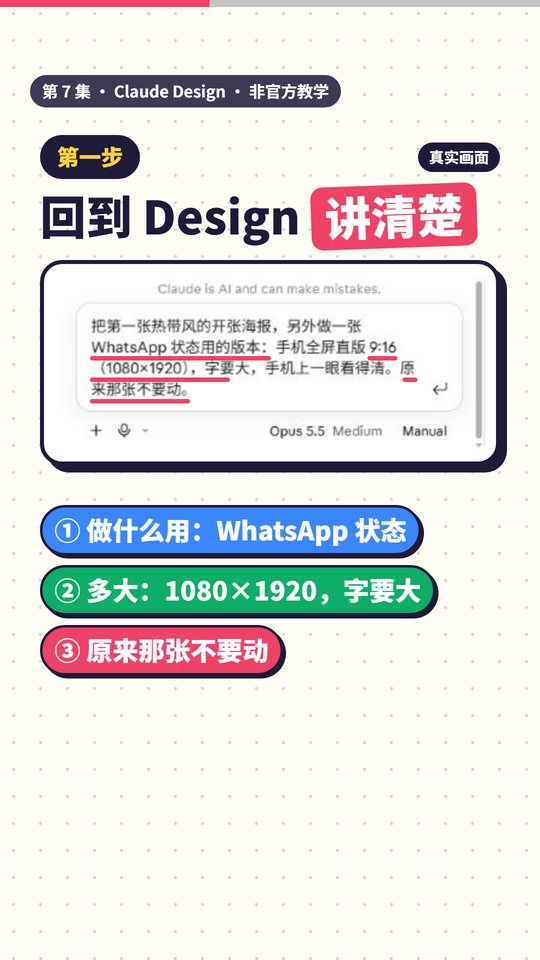
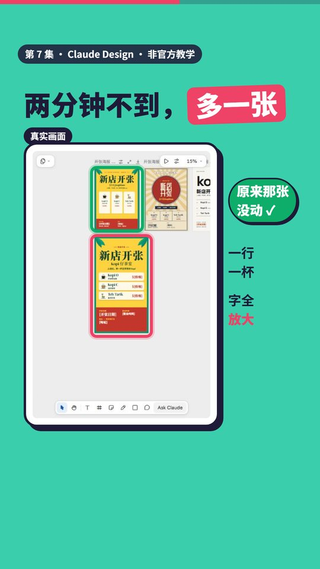
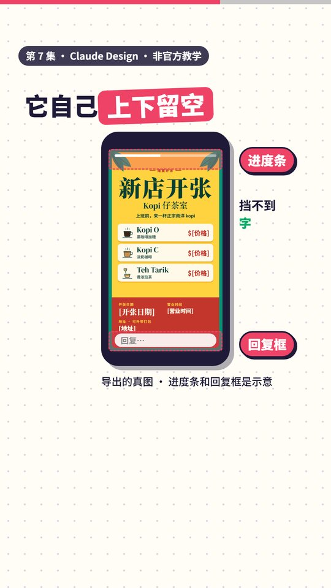
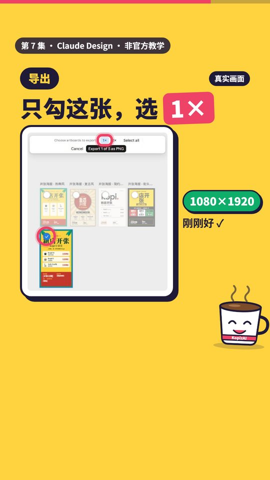
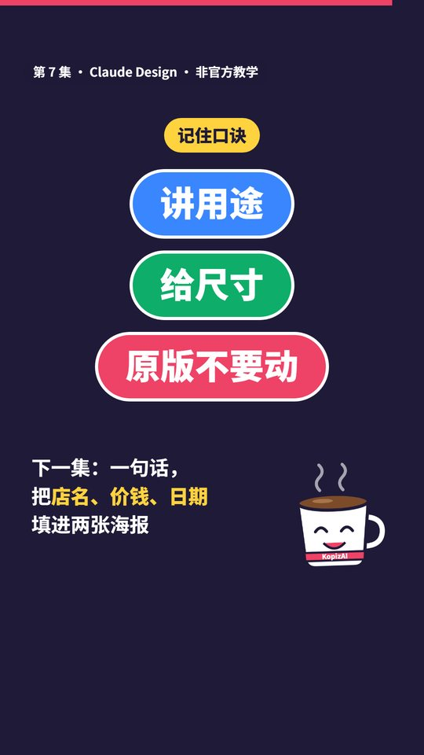

第 7 集 · 一张海报，改成 WhatsApp 状态的尺寸
一句话： 跟 Design 讲清楚做什么用、要多大，再加一句"原来那张不要动"。导出时只勾那一张，选 1×。
对照官方文档和真实界面核对日期：2026-11-15 ｜ 时长 50 秒 ｜ 非官方教学
为什么要另做一张
A4 海报是直的长方形，手机屏幕更长。A4 直接发上 WhatsApp 状态，上下会空一截，字也变小（视频 00:00 是示意图）。
跟着做
第一步：回到 Design，讲清楚三件事（视频 00:09）
在同一个设计的对话框里讲：
- 做什么用：WhatsApp 状态
- 多大：手机全屏直版 9:16，1080×1920，字要大
- 原来那张不要动
可以直接复制：
把第一张热带风的开张海报，另外做一张 WhatsApp 状态用的版本：手机全屏直版 9:16（1080×1920），字要大，手机上一眼看得清。原来那张不要动。
（"第一张热带风"换成你要改的那一张。）

结果：画布上多一张长条的（视频 00:20）
我们这次不到两分钟：原海报下面多了一张长条的，三杯饮料从并排改成一行一杯，字全放大。原来那张没有变。

它还自己上下留了空（视频 00:29）
Claude 在回复里说，它在上下留了空，WhatsApp 状态顶上的进度条和底下的回复框就不会挡到字。

第二步：导出时只勾这一张，选 1×（视频 00:34）
Share → Export → PNG。它默认勾第一张，要先把第一张取消，再勾长条那张；清晰度选 1×，按钮会写 "Export 1 of 5 as PNG"（数字看你画布上有几张）。我们导出来刚好 1080×1920。

口诀
讲用途，给尺寸，原版不要动。

时间点
| 时间 | 内容 |
|---|---|
| 00:00 | A4 海报发上状态，上下空一截（示意） |
| 00:05 | 海报是 A4，手机是长条的 |
| 00:09 | 讲清楚：做什么用、多大、原来那张不要动 |
| 00:20 | 两分钟不到，多一张长条的 |
| 00:29 | 它自己上下留空 |
| 00:34 | 导出：只勾这一张，选 1× |
| 00:40 | 口诀，下一集预告 |
顺便知道
- 1080×1920 是我们自己要求的尺寸（手机全屏 9:16）。我们没有找到 WhatsApp 官方公布的状态尺寸，所以不说"WhatsApp 规定"。
- 窗口很窄、左边栏又打开时，Design 右上角的 Share 会变成一个小图标；把左边栏收起来就恢复成文字按钮。
- 导出 PNG 和 PDF 的完整做法见第 4 集。
来源：Claude 帮助中心《Get started with Claude Design》，以及 2026 年 11 月 claude.ai 的实际操作 https://support.claude.com/en/articles/14604416-get-started-with-claude-design